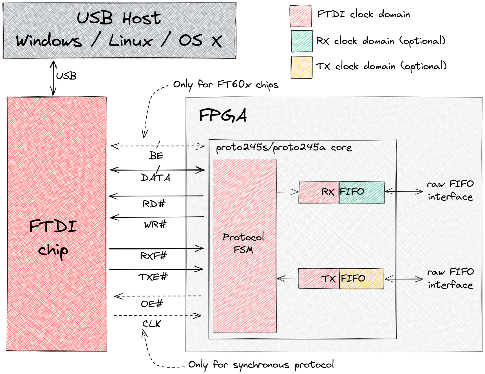
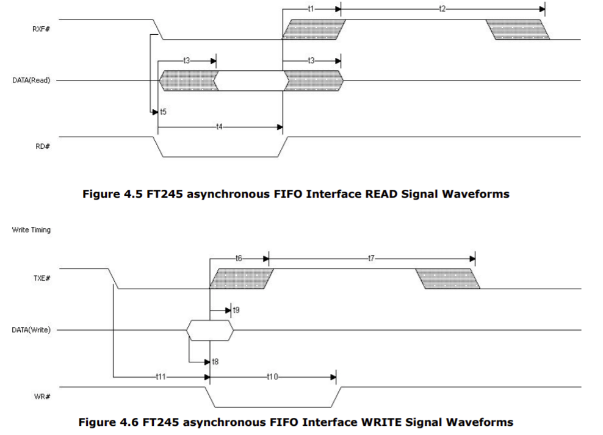
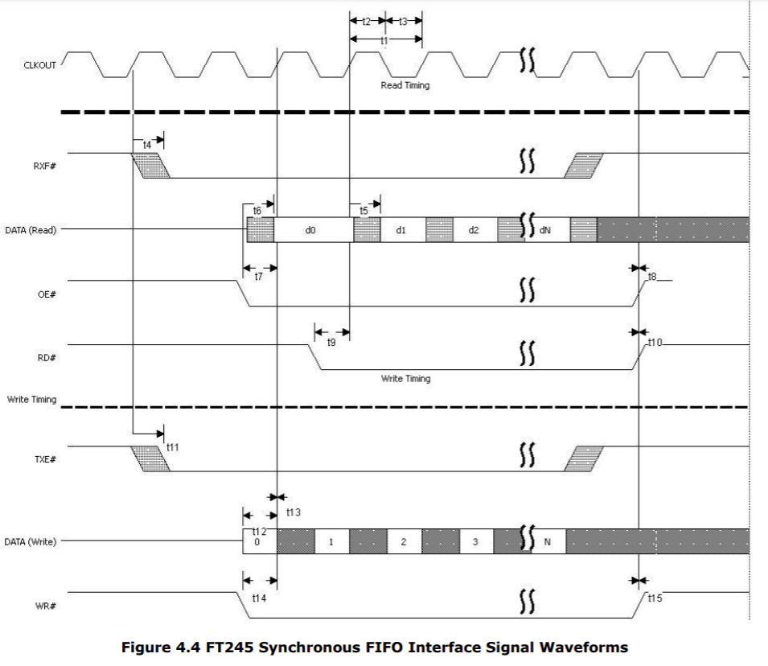
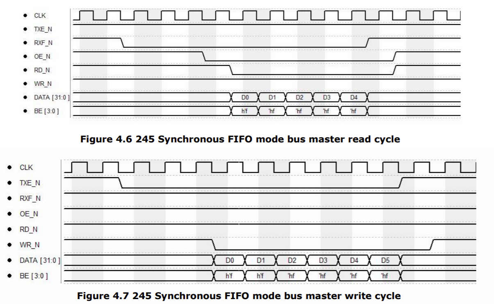
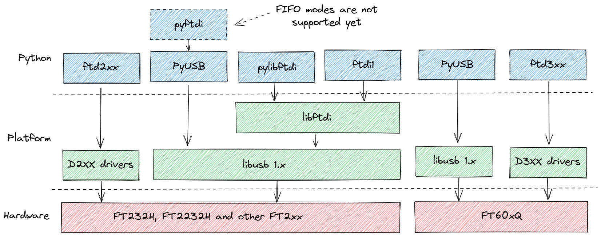
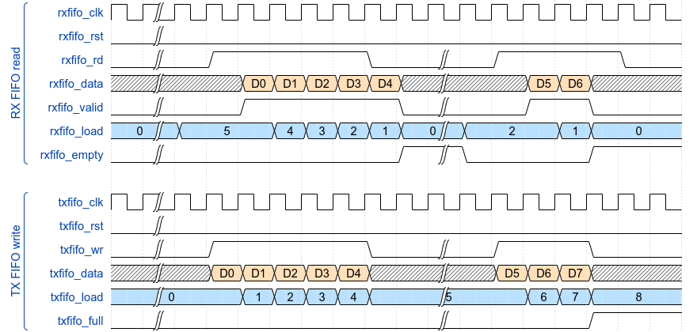
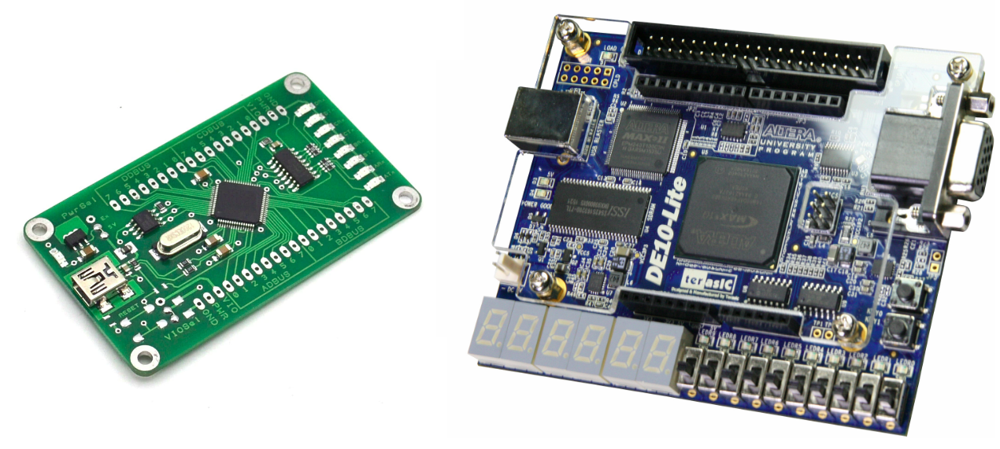
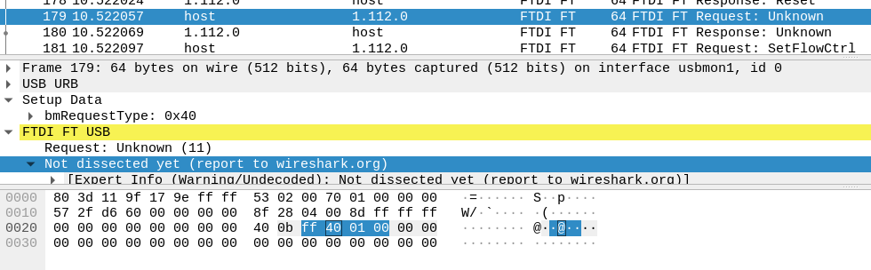

FTDI USB-FIFO или режим FT245
Posted on 16 Jul 2021 in Digital design • 12 min read
Последнее время я довольно много работал с чипами FTDI в качестве переходников USB-FIFO для FPGA: FT232H, FT2232H, FT600, асинхронный и синхронный режимы FT245, самописные ядра на SystemVerilog, ответное ПО на Python - вот это вот всё. Собралась некоторая критическая масса заметок, которые решил причесать и собрать в пост.

FTDI USB-FIFO
Железо
Насколько я понимаю, линейка этих переходников развивалась у FTDI так: FT8U245AM → FT245B → FT245R. Все они реализуют режим асинхронной параллельной шины, позволяющей обмениваться данными со скоростью до 1 МБ/с (USB 2.0 FullSpeed).

Затем у FTDI начали появляться мультиинтерфейсные чипы типа FT232H/FT2232H в стиле "переходник USB во что-угодно". И так как протокол, реализующий FIFO, там был фактически такой же как и у предшественников, то и назвали его соответственно - FT245. Однако, скорости возросли вместе с переходом на USB 2.0 HighSpeed, а значит надо было вводить ещё и синхронный режим, чтобы выжать из шины ещё больше. Поэтому стало 2 вида протоколов: асинхронный (легаси, но уже до 8 МБ/с) и синхронный (новый, до 40 МБ/с) FIFO.

В последних чипах с USB 3.0 SuperSpeed (FT60xQ) асинхронный режим отвалился совсем, и остался только синхронный 245 (200-400 МБ/с). Правда с небольшой модификацией - шиной BE (byte enable), т.к. размерность шины данных увеличилась с 8 до 16/32 бит.

На текущий момент мы имеем следующий ассортимент чипов:
| FTDI Chip | USB Speed | Asynchronous FIFO | Synchronous FIFO |
|---|---|---|---|
| FT245R | FullSpeed | ↔️ 1MB/s | ❌ |
| FT240X | FullSpeed | ↔️ 1MB/s | ❌ |
| FT2232D | FullSpeed | ↔️ 1MB/s | ❌ |
| FT232H | HighSpeed | ↔️ 8MB/s | ↔️ 40MB/s |
| FT2232H | HighSpeed | ↔️ 8MB/s | ↔️ 40MB/s |
| FT232HP/FT233HP | HighSpeed | ↔️ 8MB/s | ↔️ 40MB/s |
| FT2232HP/FT2233HP | HighSpeed | ↔️ 8MB/s | ↔️ 40MB/s |
| FT600Q | SuperSpeed | ❌ | ↔️ 200MB/s |
| FT601Q | SuperSpeed | ❌ | ↔️ 400MB/s |
| FT602Q | SuperSpeed | ❌ | ↔️ 400MB/s |
В итоге, если внимательно посмотреть на все времянки и формализовать работу с FT чипами со стороны ПЛИС, то фактически нужно только 2 ядра - одно для асинхронного протокола 245, другое - для синхронного.
Софт
У меня ОС - Ubuntu 20.04, и основной язык прикладного софта - Python.
В этом контексте я попытался найти все доступные на текущий момент библиотеки. На самом деле их даже чуть больше, но некоторые библиотеки верхнего уровня заточены только под режимы serial или bitbang, которые мне не нужны.
- snmishra/ftd2xx
- eblot/pyftdi
- pyusb
- codedstructure/pylibftdi
- libusb
- libftdi (ftdi1 - внутри)
- d2xx
- d3xx
- ftd3xx (SuperSpeed Python Example)
Нейминг библиотек не отличается особым разнообразием - почти все имена состоят из одного набора корней: "py", "usb", "ftdi", "lib". Надеюсь картинка тут поможет.

В целом, тут получается 2 пути - либо используем драйвер от производителя, либо используем libusb с подошедшей обёрткой. Вроде всё просто.
Документация
Просто список источников по теме, которые будут полезны (ну кроме даташитов, очевидно):
- D2XX Programmers Guide
- TN167 FIFO Basics
- AN130 FT2232H Used In FT245 Synchronous FIFO Mode
- AN379 D3xx Programmers Guide
- AN386 FTDI FT600 Maximize Performance
- AN412 FT600_FT601 USB Bridge chips Integration
- FT600/601 Question about maximum data rate (practical)
Проект proto245
Ядра для обоих видов протоколов написаны на SystemVerilog и лежат в репозитории proto245 на Github.
Конечно, я не первый кто пишет подобные корки:
- alexforencich/verilog-ft245 (aсинхронный)
- ultraembedded/core_ftdi_bridge (aсинхронный/синхронный)
- ultraembedded/core_ft60x_axi (синхронный)
- 6thimage/FT245_interface (aсинхронный)
- WangXuan95/FTDI-245fifo-interface (синхронный)
У всех есть свои особенности реализации, но самый главный фатальный недостаток - они Not_Invented_Here =). Так что раз погружаться в тему, так с головой.
proto245a
Реализует асинхронный FT245 с одной стороны, и предоставляет 2 простых FIFO интерфейса с другой (приём и передача). Умышленно не стал вносить внутрь какой-нибудь AXI-Stream, т.к. накрутить его поверх не составит проблем, ну и мне нужны были именно "сырые" FIFO. Возможно, когда-нибудь я это исправлю.
Времянки сигналов RD# и WR# конфигурируются с помощью параметров. Плюс можно настроить как размеры буферов FIFO на приём и передачу, так и их вид, в зависимости от того сколько тактовых доменов будет в дизайне.
Иерархия модулей:
Single clock domain:
proto245a (proto245a.sv)
├── rxfifo (fifo_sync.sv)
│ └── dpram (dpram.sv)
└── txfifo (fifo_sync.sv)
└── dpram (dpram.sv)
Multiple clock domains:
proto245a (proto245a.sv)
├── rxfifo (fifo_async.sv)
│ └── dpram (dpram.sv)
└── txfifo (fifo_async.sv)
└── dpram (dpram.sv)
Времянки интерфейсов FIFO, уходящих внутрь ПЛИС ниже.

Больше про блок особенно рассказывать нечего, разве что сигнал Send Immediate / Wake Up signal (SIWU) не используется и находится в неактивном состоянии.
proto245s
Реализует синхронный FT245 с одной стороны, и предоставляет 2 простых FIFO интерфейса с другой (приём и передача).
Тут настроек несколько больше. Можно выбрать нужную ширину данных, настроить FIFO, как и ранее. Плюс, т.к. обмен идёт пачками/бёрстами/bursts данных, то есть настройки размеров бёрста, условий для старта приемопередачи, в зависимости от уровня заполнения FIFO, и паузы между бёрстами. Это позволяет провести тонкий тюнинг производительности, при желании.
Иерархия модулей:
Single clock domain:
proto245s (proto245s.sv)
├── rxfifo (fifo_sync.sv)
│ └── dpram (dpram.sv)
├── txfifo (fifo_sync.sv)
│ └── dpram (dpram.sv)
└── txovrbuf (fifo_sync.sv)
└── dpram (dpram.sv)
Multiple clock domains:
proto245s (proto245s.sv)
├── rxfifo (fifo_async.sv)
│ └── dpram (dpram.sv)
├── txfifo (fifo_async.sv)
│ └── dpram (dpram.sv)
└── txovrbuf (fifo_sync.sv)
└── dpram (dpram.sv)
FIFO, смотрящие внутрь ПЛИС, работают точно так же как и в proto245a.
Сигнал SIWU (чипы FT2xxx) не используется - находится в неактивном состоянии.
Сигналы BE (чипы FT60x) пока не используются тоже - по чтению игнорируются, по записи - там всегда единички. Поэтому транзакции должны быть выровнены пословно.
Кстати надо наверное ещё упомянуть, что в синхронном режиме существует проблема потери данных из-за "конвеерности", возникающая, если поставить триггеры в пути контрольных сигналов и данных. Т.е. когда происходит чтение из FT, то пока сигнал о заполненности нашего приемного FIFO уйдет в FT-чип и тот остановит выдачу данных, мы можем потерять пару последних слов (RX FIFO overflow). Почти тоже самое и при передаче - пока сигнал от FT о заполненности буфера дойдет до нас и мы остановим чтение нашего передающего FIFO, то потеряем слова уже вычитанные из него , но ещё не отправленные наружу (TX FIFO overrun).
В реализациях с github обходят это по разному, вплоть до полного отсутствия триггеров - сигналы с IO идут сразу на BRAM внутри FIFO. У меня триггеры по входам-выходам имеются, и проблема overflow решается за счёт введения состояния "почти полный", а проблема overrun с помощью микрофифо на несколько элементов.
Пример с FT2232H + DE10-Lite
Для меня основной интерес представлял именно синхронный режим, поэтому дальше будет только о нём. Но асинхронный тоже работает, и в репозитории можно найти информацию как его запустить.
В качестве тестового стенда использовалась плата с FT2232H и отладка DE10-Lite.

Соединялись они через DIY-плату переходник. Список соединений в таблице:
| FT Pin | FT Function | GPIO J1 Header | RTL Top |
|---|---|---|---|
| ADBUS0 | D0 | gpio[8] | ft_data[0] |
| ADBUS1 | D1 | gpio[10] | ft_data[1] |
| ADBUS2 | D2 | gpio[12] | ft_data[2] |
| ADBUS3 | D3 | gpio[14] | ft_data[3] |
| ADBUS4 | D4 | gpio[16] | ft_data[4] |
| ADBUS5 | D5 | gpio[18] | ft_data[5] |
| ADBUS6 | D6 | gpio[20] | ft_data[6] |
| ADBUS7 | D7 | gpio[22] | ft_data[7] |
| ACBUS0 | RXF# | gpio[24] | ft_rxfn |
| ACBUS1 | TXE# | gpio[26] | ft_txen |
| ACBUS2 | RD# | gpio[28] | ft_rdn |
| ACBUS3 | WR# | gpio[30] | ft_wrn |
| ACBUS4 | SIWU | gpio[32] | ft_siwu |
| ACBUS5 | CLKOUT | gpio[2] | ft_clk |
| ACBUS6 | OE# | gpio[34] | ft_oen |
ftd2xx (D2xx)
Начнем с драйверов от производителя D2XX. Они ведь скорее всего хорошо работают из коробки, верно?
Скачиваем архив и идём по инструкции из ReadMe.txt в нём
1. tar xfvz libftd2xx-x86_64-1.4.24.tgz
2. cd build
3. sudo -s
4. cp libftd2xx.* /usr/local/lib
5. chmod 0755 /usr/local/lib/libftd2xx.so.1.4.24
6. ln -sf /usr/local/lib/libftd2xx.so.1.4.24 /usr/local/lib/libftd2xx.so
7. cd ..
cp ftd2xx.h /usr/local/include
cp WinTypes.h /usr/local/include
8. ldconfig -v
9. exit
Устанавливаем питоний пакет ftd2xx - это довольно тонкая обёртка над либами от FTDI.
$ python3 -m pip install ftd2xx
Создаём скрипт test_ftd2xx.py и пытаемся посмотреть доступные устройства
import ftd2xx as ft
print(ft.listDevices())
Упс
$ ./test_ftd2xx.py
Traceback (most recent call last):
File "./proto245_ftd2xx.py", line 3, in <module>
import ftd2xx as ft
File "/home/esynr3z/.local/lib/python3.8/site-packages/ftd2xx/__init__.py", line 12, in <module>
from .ftd2xx import *
File "/home/esynr3z/.local/lib/python3.8/site-packages/ftd2xx/ftd2xx.py", line 15, in <module>
from . import _ftd2xx_linux as _ft
File "/home/esynr3z/.local/lib/python3.8/site-packages/ftd2xx/_ftd2xx_linux.py", line 1623, in <module>
stime = _libraries['libftd2xx.so'].stime
File "/usr/lib/python3.8/ctypes/__init__.py", line 386, in __getattr__
func = self.__getitem__(name)
File "/usr/lib/python3.8/ctypes/__init__.py", line 391, in __getitem__
func = self._FuncPtr((name_or_ordinal, self))
AttributeError: /usr/local/lib/libftd2xx.so: undefined symbol: stime
Гугление говорит о том, начиная с определенной версии ядра, этой функции больше нет. Хехе, в процессе поисков наткнулся даже на такое:
GoWin programmer, the tool for uploading the bitstream to the FPGA,
doesn't work on Linux kernel >=5.4.
Shows attribute error libftd2xx.so: undefined symbol: stime .
The only way to upload bitstream is using open-source project OpenFPGALoader.
Чтож, не использовать драйвер от FTDI тоже выход.
Ладно, просто попробуем закоментировать stime в blabla/python3.8/site-packages/ftd2xx/_ftd2xx_linux.py (судя по всему, это автоматически сгенерированная обёртка).
stime = _libraries['libftd2xx.so'].stime
stime.restype = c_int
# stime(__when)
stime.argtypes = [POINTER(time_t)]
stime.__doc__ = \
"""int stime(unknown * __when)
/usr/include/time.h:294"""
Запускаем снова и теперь видим устройства
$ ./test_ftd2xx.py
[b'FT3C8Z0AA', b'FT3C8Z0AB']
Попытаемся подключиться к чипу и сбросить его
import ftd2xx as ft
try:
dev_id = ft.listDevices().index(b'FT3C8Z0AA')
except ValueError:
raise Exception("No board found!")
dev = ft.open(dev_id)
dev.resetDevice()
dev.close()
print("Done!")
Что-то пошло не так
$ ./test_ftd2xx.py
Traceback (most recent call last):
File "./proto245_ftd2xx.py", line 12, in <module>
dev = ft.open(dev_id)
File "/home/esynr3z/.local/lib/python3.8/site-packages/ftd2xx/ftd2xx.py", line 100, in open
call_ft(_ft.FT_Open, dev, c.byref(h))
File "/home/esynr3z/.local/lib/python3.8/site-packages/ftd2xx/ftd2xx.py", line 44, in call_ft
raise DeviceError(status)
ftd2xx.ftd2xx.DeviceError: DEVICE_NOT_OPENED
Тут я начал проверять соединения, права в системе и гуглить все возможные причины. Даже нашел ответ. Хотя на самом деле, стоило всего лишь заглянуть в ReadMe.txt на один раздел дальше в "Notes on Kernel Built-in Support of FTDI devices". Классика.
On most distributions, the linux kernel will have either a built-in or optional
module called "ftdi_sio". This will detect an FTDI device and automatically
invoke the "usbserial" module and create devices such as "/dev/ttyUSB0".
When the ftdi_sio module is controlling an FTDI device it is not available to
libftd2xx. If the library attempts to access the device it will receive a
message "FT_Open failed".
1) Remove the ftdi_sio module from the running kernel:
...
2) Build a new kernel without the ftdi_sio module.
...
3) Use a udev unbind sysfs interface to disable devices as they are connected.
...
Ок, пойдем первым путем. Это действо нужно выполнять это каждый раз после подключения FT2232H. Можно конечно автоматизировать, но пока и так пойдет.
$ sudo rmmod ftdi_sio
Снова выполняем скрипт
$ ./test_ftd2xx.py
Done!
Отлично. "Дорисовываем остальную часть совы". Полный код здесь.
import ftd2xx as ft
from time import time, sleep
KiB = 1024
MiB = KiB * 1024
class FPGA:
def __init__(self, ftdi_serial, fifo245_mode):
self.ftdi_serial = ftdi_serial
self.fifo245_mode = fifo245_mode
def __enter__(self):
try:
ftdev_id = ft.listDevices().index(self.ftdi_serial)
except ValueError:
raise Exception("No board found!")
self.ftdev = ft.open(ftdev_id)
self.ftdev.resetDevice()
# AN130 for more details about commands below
self.ftdev.setBitMode(0xff, 0x40 if self.fifo245_mode == 'sync' else 0x00)
self.ftdev.setTimeouts(10, 10) # in ms
self.ftdev.setUSBParameters(64 * KiB, 64 * KiB) # set rx, tx buffer size in bytes
self.ftdev.setFlowControl(ft.defines.FLOW_RTS_CTS, 0, 0)
return self
def __exit__(self, exc_type, exc_val, exc_tb):
self.ftdev.close()
def test_read(self, total_bytes=1 * MiB):
...
def test_write(self, total_bytes=1 * MiB):
...
if __name__ == "__main__":
with FPGA(ftdi_serial=b'FT3C8Z0AA', fifo245_mode='sync') as de10lite:
de10lite.test_read(100 * MiB)
de10lite.test_write(100 * MiB)
Задумка простая:
- Открываем чип, включаем режим синхронного FIFO, настраиваем размеры буферов и таймауты в драйвере.
- Затем делаем тест на чтение - отправляем код команды и количество ожидаемых байт в ПЛИС, она начинает генерировать данные непрерывно (просто увеличивающееся значение счётчика), на стороне софта проверяем что всё корректно приняли.
- Потом делаем тест на запись - отправляем в ПЛИС код команды и количество байт, которые хотим записать, отправляем данные, и ждём от ПЛИС ответа, что нужное количество байт было принято, и они все были корректны.
Поехали
$ ./test_ftd2xx.py
Read 100.00 MiB (104857600 bytes) from FPGA in 10.846953 seconds (9.22 MiB/s)
Verify data: ok
Wrote 100.00 MiB (104857600 bytes) to FPGA in 2.632750 seconds (37.98 MiB/s)
Verify data: ok
Хмм, со скоростью чтения явно что-то не так. Экспереметируем, гуглим, и находим вот это:
- Data transfer speed is limited to 8MByte/s with FT232H in Synchronous FIFO style
- Reading data from FT232h via FT2XX driver - data loss on Raspberry Pi
TL;DR. Да, знаем что в драйвере под линукс баг, ограничивающий скорость чтения, да, править не планируем, используйте альтернативы.
Для чистоты совести проверим работу под Windows 7
D:\>python test_ftd2xx.py
Read 100.00 MiB (104857600 bytes) from FPGA in 2.293204 seconds (43.61 MiB/s)
Verify data: ok
Wrote 100.00 MiB (104857600 bytes) to FPGA in 3.478806 seconds (28.75 MiB/s)
Verify data: ok
Да, похоже что не врали. Ну значит с драйвером от FTDI нам не пути, идём смотреть альтернативы.
pylibftdi (libftdi)
Попробуем аналог оригинального драйвера с открытым исходным кодом - libftdi. Он вроде как даже не должен проигрывать по скорости.
Устанавливаем сам драйвер и модуль-обёртку pylibftdi.
$ sudo apt-get install libftdi1
$ python3 -m pip install pylibftdi
Проверяем что все установилось успешно
$ python3 -m pylibftdi.examples.info
pylibftdi version : 0.18.0
libftdi version : libftdi_version(major=1, minor=4, micro=0, version_str=b'1.4', snapshot_str=b'unknown')
libftdi library name : libftdi1.so.2
libusb version : libusb_version(major=1, minor=0, micro=23, nano=11397, rc=b'', describe=b'http://libusb.info')
libusb library name : libusb-1.0.so.0
Python version : 3.8.5
OS platform : Linux-5.8.0-55-generic-x86_64-with-glibc2.29
Составляем минимальный шаблон, который может открыть устройство и включить синхронный режим
from pylibftdi import Driver, Device
from time import time, sleep
KiB = 1024
MiB = KiB * 1024
class FPGA(Device):
def __init__(self, ftdi_serial, fifo245_mode, chunk_size=64 * KiB):
super().__init__(device_id=ftdi_serial, mode='b',
lazy_open=True, chunk_size=chunk_size, interface_select=1)
self.fifo245_mode = fifo245_mode
def __enter__(self):
super().open()
self.ftdi_fn.ftdi_set_bitmode(0, 0x40 if self.fifo245_mode == 'sync' else 0x00)
return self
def __exit__(self, exc_type, exc_val, exc_tb):
super().close()
if __name__ == "__main__":
with FPGA(ftdi_serial='FT3C8Z0A', fifo245_mode='sync') as de10lite:
sleep(3)
Проверяем - ошибок при запуске нет, значит скорее всего всё работать будет. Добавляем тестовую логику, аналогично предыдущему примеру. Получается вот такой скрипт. Запускаем:
$ ./test_pylibftdi.py
Read 100.00 MiB (104857600 bytes) from FPGA in 2.705440 seconds (36.96 MiB/s)
Verify data: ok
Wrote 100.00 MiB (104857600 bytes) to FPGA in 2.717165 seconds (36.80 MiB/s)
Verify data: ok
Во! Уже похоже на нормальную скорость. Возможно, если немного оптимизировать методы записи и чтения в этой библиотеке, можно выжать и побольше. Но для интереса можно сделать и по-другому...
ftdi1 (libftdi)
В pylibftdi автор пошёл путем написания своего слоя абстракции над libftdi. Однако, вместе с исходниками libftdi поставляется .i файл для SWIG. Если в двух словах, то можно сгенировать Python обёртку для libftdi самостоятельно и вызывать C функции библиотеки практически нативно и без привлечения ctypes. Почему бы и не попробовать.
Устанавливаем зависимости и клонируем репозиторий с исходниками
sudo apt-get install build-essential git-core cmake libusb-1.0-0-dev swig python3-dev libconfuse-dev
git clone git://developer.intra2net.com/libftdi
Для того чтобы обёртка была под Python 3 придётся немного подправить скрипты сборки. Открываем файл libftdi/python/CMakeLists.txt и меняем
find_package ( PythonInterp REQUIRED )
find_package ( PythonLibs REQUIRED )
на
find_package ( PythonInterp 3.8 REQUIRED )
find_package ( PythonLibs 3.8 REQUIRED )
Собираем и устанавливаем полученный модуль
cd libftdi
mkdir build
cd build
cmake -DSTATICLIBS=OFF -DFTDI_EEPROM=OFF -DEXAMPLES=OFF -DPYTHON_BINDINGS=ON ../
make
cp python/*ftdi1* ~/.local/lib/python3.8/site-packages
По традиции делаем сперва рыбу
import ftdi1 as ft
from time import time, sleep
class FPGA:
def __init__(self, serial, sync=True, vid=0x0403, pid=0x6010):
self._vid = vid
self._pid = pid
self._serial = serial
self._sync = sync
def _err_wrap(self, ret):
if ret < 0: # prints last error message
raise Exception("%s (%d)" % (ft.get_error_string(self._ctx), ret))
else:
return ret
def __enter__(self):
self._ctx = ft.new()
self._err_wrap(ft.init(self._ctx))
self._err_wrap(ft.usb_open_desc(self._ctx, self._vid, self._pid, None, self._serial))
self._err_wrap(ft.set_bitmode(self._ctx, 0xff, ft.BITMODE_SYNCFF if self._sync else ft.BITMODE_RESET))
return self
def __exit__(self, type, value, traceback):
self._err_wrap(ft.usb_close(self._ctx))
ft.deinit(self._ctx)
def write(self, data):
bytes_wrote = self._err_wrap(ft.write_data(self._ctx, data))
return bytes_wrote
def read(self, n):
bytes_read, data = ft.read_data(self._ctx, n)
self._err_wrap(bytes_read)
return (bytes_read, data)
if __name__ == '__main__':
with FPGA('FT3C8Z0A') as de10lite:
sleep(3)
Наполняем тестовой логикой и чуть фиксим в процессе отладки - получается вот это. Запускаем
$ ./test_ftdi1.py
Read 100.00 MiB (104857600 bytes) from FPGA in 2.422061 seconds (41.29 MiB/s)
Verify data: ok
Wrote 100.00 MiB (104857600 bytes) to FPGA in 2.342588 seconds (42.69 MiB/s)
Verify data: ok
Другое дело! Заявленные даташитом "upto 40 Mbytes/Sec" уже есть. Можно было бы на этом и остановиться, но...
pyusb (libusb)
Гулять так гулять. Уберем лишнюю прослойку в виде libftdi, и будем читать/писать контрольные точки USB напрямую с помощью pyusb.
Всего нам доступно 3 конечных точки:
- CONTROL - для настройки режимов и обслуживания USB
- IN - для чтения данных из приемного FIFO чипа
- OUT - для записи данных в передающее FIFO
Работа с последними двумя довольно прозрачна - пишешь байты, они попадают в буфер, читаешь - получаешь данные из буфера. Но нужно ещё настроить синхронный режим. Очевидно, что нигде в документации не сказано как сформировать транзакцию в управляющую точку чтобы включить этот режим. Однако, можно просто "послушать" как это делает драйвер. Например, с помощью Wireshark.
Gotcha! Вот она прошла - 0x40 это как раз режим синхронного FIFO.

Теперь можно собрать минимально рабочий пример
import usb.core
import usb.util
from time import time, sleep
class FPGA:
def __init__(self, serial, sync=True, vid=0x0403, pid=0x6010):
self._vid = vid
self._pid = pid
self._serial = serial
self._sync = sync
def __enter__(self):
dev = usb.core.find(idVendor=self._vid, idProduct=self._pid)
if dev is None or dev.serial_number != self._serial:
raise Exception("Device was not found!")
self._ft = dev
if self._ft.is_kernel_driver_active(0):
self._ft.detach_kernel_driver(0)
usb.util.claim_interface(self._ft, 0)
self._ft.ctrl_transfer(bmRequestType=0x40, bRequest=11, wValue=0x000140ff if self._sync else 0x000000ff)
return self
def __exit__(self, type, value, traceback):
usb.util.release_interface(self._ft, 0)
def write(self, data):
self._ft.write(0x2, data) # OUT EP
def read(self, n):
return self._ft.read(0x81, n) # IN EP
if __name__ == '__main__':
with FPGA('FT3C8Z0A') as de10lite:
sleep(3)
Отлично. Теперь добавляем логику для тестов в скрипт и запускаем
$ ./test_pyusb.py
Read 100.00 MiB (104857600 bytes) from FPGA in 2.335567 seconds (42.82 MiB/s)
Verify data: ok
Wrote 10.00 MiB (10485760 bytes) to FPGA in 0.239542 seconds (41.75 MiB/s)
Verify data: ok
Выше головы прыгнуть не получилось, но вот некоторые нюансы появились:
- FT2232H (ровно как и другие FT2xx) в каждой usb транзакции вставляет в начало два байта со статусом модемных сигналов. Другие драйвера вырезают их автоматически, здесь это приходится делать в постпроцессинге, т.к. на лету это режет скорость в разы. Поэтому полученная скорость чтения - это несколько лукавая цифра.
- В тесте на запись пишу 10МБ вместо обычных 100МБ как ранее, т.к. при большом объеме данных pyusb падает с ошибкой
usb.core.USBError: [Errno 5] Input/Output Error. Экспереметировал, пробовал бить данные на кусочки, но так и не смог её обойти.
В целом, опыт интересный, но без веской причины стучать в конечные точки руками наверное не стоит, лучше воспользоваться драйвером.
Про FT600
В планах было написать и о работе со "старшим братом". Но тут всё сложилось интересно. У меня пока еще не было этого чипа на столе, но один добрый человек за много километров от меня подключил отладку с FT600 к девборде с Lattice, подцепил это всё к Raspberry Pi, воткнул камеру и дал мне ssh. Поигрался я какое-то время, и понял что без отладчика и анализатора как-то совсем грустно - юзать бета-версию драйверов FTDI (драйвера под ARM они пока еще не выложили в открытый доступ), синтезить Yosys'ом без констрейнтов на IO и наблюдать за работой по мутному и дерганному видео, то ещё удовольствие. Поэтому отложил это дело до тех пор, пока чип не появится живьём у меня.